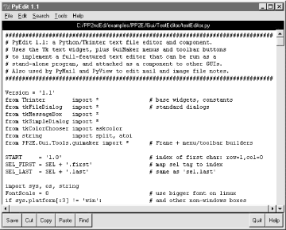
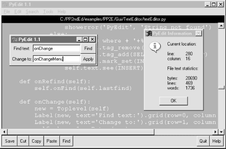
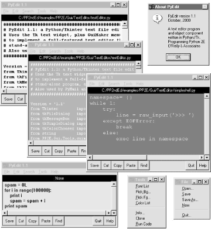

| I l@ve RuBoard |
|
9.4 PyEdit: A Text Editor Program/ObjectIn the last few decades, I've typed text into a lot of programs. Most were closed systems (I had to live with whatever decisions their designers made), and many ran on only one platform. The PyEdit program presented in this section does better on both counts: it implements a full-featured, graphical text editor program in roughly 470 lines of portable Python code (including whitespace and comments). Despite its size, PyEdit was sufficiently powerful and robust to serve as the primary tool used to code most examples in this book. PyEdit supports all the usual mouse and keyboard text-editing operations: cut and paste, search and replace, open and save, and so on. But really, PyEdit is a bit more than just another text editor -- it is designed to be used as both a program and a library component, and can be run in a variety of roles:
While such mixed-mode behavior may sound complicated to implement, most of PyEdit's modes are a natural by-product of coding GUIs with the class-based techniques we've seen in the last three chapters. 9.4.1 Running PyEditPyEdit sports lots of features, and the best way to learn how it works is to test drive it for yourself -- it can be run by starting the file textEditor.pyw, or from the PyDemo and PyGadget launcher bars described in the previous chapter (the launchers themselves live in the top level of the book examples directory tree). To give you a sampling of its interfaces, Figure 9-10 shows the main window's default appearance, after opening PyEdit's source code file. Figure 9-10. PyEdit main window, editing itselfThe main part of this window is a Text widget object, and if you read the last chapter's coverage of this widget, PyEdit text-editing operations will be familiar. It uses text marks, tags, and indexes, and implements cut-and-paste operations with the system clipboard so that PyEdit can paste data to and from other applications. Both vertical and horizontal scrollbars are cross-linked to the Text widget, to support movement through arbitrary files. If PyEdit's menu and toolbars look familiar, they should -- it builds the main window with minimal code and appropriate clipping and expansion policies, by mixing in the GuiMaker class we met earlier in this chapter. The toolbar at the bottom contains shortcut buttons for operations I tend to use most often; if my preferences don't match yours, simply change the toolbar list in the source code to show the buttons you want (this is Python, after all). As usual for Tkinter menus, shortcut key combinations can be used to invoke menu options quickly, too -- press Alt plus all the underlined keys of entries along the path to the desired action. PyEdit pops up a variety of modal and nonmodal dialogs, both standard and custom. Figure 9-11 shows the custom and nonmodal change dialog, along with a standard dialog used to display file statistics. Figure 9-11. PyEdit with colors, font, and a few pop-upsThe main window here has been given new foreground and background colors (with the standard color selection dialog), and a new text font has been selected from a canned list in the script that users can change to suit their preferences (this is Python, after all). The standard file open and save selection dialogs in PyEdit use object-based interfaces to remember the last directory visited, so you don't have to renavigate there every time. One of the more unique features of PyEdit is that it can actually run Python program code that you are editing. This isn't as hard as it may sound either -- because Python provides built-ins for both compiling and running code strings and launching programs, PyEdit simply has to make the right calls for this to work. For example, it's easy to code a simple-minded Python interpreter in Python (though you need a bit more to handle multiple-line statements), as shown in Example 9-13. Example 9-13. PP2E\Gui\TextEditor\simpleshell.pynamespace= {}
while 1:
try:
line = raw_input('>>> ') # single line statements only
except EOFError:
break
else:
exec line in namespace # or eval( ) and print result
Depending on the user's preference, PyEdit either does something similar to this to run code fetched from the text widget, or uses the launchmodes module we wrote at the end of Chapter 3 to run the code's file as an independent program. There are a variety of options in both schemes that you can customize as you like (this is Python, after all). See the onRunCode method for details, or simply edit and run some Python code on your own. Figure 9-12 shows four independently started instances of PyEdit running with a variety of color schemes, sizes, and fonts. This figure also captures two PyEdit torn-off menus (lower right) and the PyEdit help pop-up (upper right). The edit windows' backgrounds are shades of yellow, blue, purple, and orange; use the Tools menu's Pick options to set colors as you like. Figure 9-12. Multiple PyEdit sessions at workSince these four PyEdit sessions are all editing Python source-coded text, you can run their contents with the Run Code option in the Tools pull-down menu. Code run from files is spawned independently; the standard streams of code run not from a file (i.e., fetched from the text widget itself) are mapped to the PyEdit session's console window. This isn't an IDE by any means; it's just something I added because I found it to be useful. It's nice to run code you're editing without fishing through directories. One caveat before I turn you loose on the source code: PyEdit does not yet have an Undo button in this release. I don't use such a mode myself, and it's easy to undo cuts and pastes right after you've done them (simply paste back from the clipboard, or cut the pasted and selected text). Adding a general undo option would make for a fun exercise if you are so motivated. An interesting approach may be to subclass either the TextEditor class here or the Tkinter Text class itself. Such a subclass would record text operations on a limited-length list and run calls to back out of each logged operation on demand and in reverse. It could also be used to make PyEdit smarter about knowing when to ask about saving the file before it exits. By adding undo as an external subclass, exiting PyEdit code would not have to be instrumented to keep track of everything it does to the text. This is Python, after all. 9.4.2 PyEdit Source CodeThe program in Example 9-14 consists of just two source files -- a .pyw that can be run on Windows to avoid the DOS console streams window pop-up, and a main .py that can be either run or imported. We need both because PyEdit is both script and library, and .pyw files can only be run, not imported (see Chapter 2 if you've forgotten what that implies). Example 9-14. PP2E\Gui\TextEditor\textEditor.pyw#################################################################
# run PyEdit without DOS console popup for os.system on Windows;
# at present, ".pyw" files cannot be imported as modules;
# if you want a file to be both a program that launches without
# a dos console box on windows, and be imported from elsewhere,
# use ".py" for the main file and import .py code from a ".pyw";
# execfile('textEditor.py') fails when run from another dir,
# because the current working dir is the dir I'm run from;
#################################################################
import textEditor # grab .py (or .pyc) file
textEditor.main( ) # run top-level entry point
The module in Example 9-15 is PyEdit's implementation; the main classes used to start and embed a PyEdit object appear at the end of this file. Study this listing while you experiment with PyEdit, to learn about its features and techniques. Example 9-15. PP2E\Gui\TextEditor\textEditor.py################################################################################
# PyEdit 1.1: a Python/Tkinter text file editor and component.
# Uses the Tk text widget, plus GuiMaker menus and toolbar buttons
# to implement a full-featured text editor that can be run as a
# stand-alone program, and attached as a component to other GUIs.
# Also used by PyMail and PyView to edit mail and image file notes.
################################################################################
Version = '1.1'
from Tkinter import * # base widgets, constants
from tkFileDialog import * # standard dialogs
from tkMessageBox import *
from tkSimpleDialog import *
from tkColorChooser import askcolor
from string import split, atoi
from PP2E.Gui.Tools.guimaker import * # Frame + menu/toolbar builders
START = '1.0' # index of first char: row=1,col=0
SEL_FIRST = SEL + '.first' # map sel tag to index
SEL_LAST = SEL + '.last' # same as 'sel.last'
import sys, os, string
FontScale = 0 # use bigger font on linux
if sys.platform[:3] != 'win': # and other non-windows boxes
FontScale = 3
class TextEditor: # mix with menu/toolbar Frame class
startfiledir = '.'
ftypes = [('All files', '*'), # for file open dialog
('Text files', '.txt'), # customize in subclass
('Python files', '.py')] # or set in each instance
colors = [{'fg':'black', 'bg':'white'}, # color pick list
{'fg':'yellow', 'bg':'black'}, # first item is default
{'fg':'white', 'bg':'blue'}, # tailor me as desired
{'fg':'black', 'bg':'beige'}, # or do PickBg/Fg chooser
{'fg':'yellow', 'bg':'purple'},
{'fg':'black', 'bg':'brown'},
{'fg':'lightgreen', 'bg':'darkgreen'},
{'fg':'darkblue', 'bg':'orange'},
{'fg':'orange', 'bg':'darkblue'}]
fonts = [('courier', 9+FontScale, 'normal'), # platform-neutral fonts
('courier', 12+FontScale, 'normal'), # (family, size, style)
('courier', 10+FontScale, 'bold'), # or popup a listbox
('courier', 10+FontScale, 'italic'), # make bigger on linux
('times', 10+FontScale, 'normal'),
('helvetica', 10+FontScale, 'normal'),
('ariel', 10+FontScale, 'normal'),
('system', 10+FontScale, 'normal'),
('courier', 20+FontScale, 'normal')]
def __init__(self, loadFirst=''):
if not isinstance(self, GuiMaker):
raise TypeError, 'TextEditor needs a GuiMaker mixin'
self.setFileName(None)
self.lastfind = None
self.openDialog = None
self.saveDialog = None
self.text.focus( ) # else must click in text
if loadFirst:
self.onOpen(loadFirst)
def start(self): # run by GuiMaker.__init__
self.menuBar = [ # configure menu/toolbar
('File', 0,
[('Open...', 0, self.onOpen),
('Save', 0, self.onSave),
('Save As...', 5, self.onSaveAs),
('New', 0, self.onNew),
'separator',
('Quit...', 0, self.onQuit)]
),
('Edit', 0,
[('Cut', 0, self.onCut),
('Copy', 1, self.onCopy),
('Paste', 0, self.onPaste),
'separator',
('Delete', 0, self.onDelete),
('Select All', 0, self.onSelectAll)]
),
('Search', 0,
[('Goto...', 0, self.onGoto),
('Find...', 0, self.onFind),
('Refind', 0, self.onRefind),
('Change...', 0, self.onChange)]
),
('Tools', 0,
[('Font List', 0, self.onFontList),
('Pick Bg...', 4, self.onPickBg),
('Pick Fg...', 0, self.onPickFg),
('Color List', 0, self.onColorList),
'separator',
('Info...', 0, self.onInfo),
('Clone', 1, self.onClone),
('Run Code', 0, self.onRunCode)]
)]
self.toolBar = [
('Save', self.onSave, {'side': LEFT}),
('Cut', self.onCut, {'side': LEFT}),
('Copy', self.onCopy, {'side': LEFT}),
('Paste', self.onPaste, {'side': LEFT}),
('Find', self.onRefind, {'side': LEFT}),
('Help', self.help, {'side': RIGHT}),
('Quit', self.onQuit, {'side': RIGHT})]
def makeWidgets(self): # run by GuiMaker.__init__
name = Label(self, bg='black', fg='white') # add below menu, above tool
name.pack(side=TOP, fill=X) # menu/toolbars are packed
vbar = Scrollbar(self)
hbar = Scrollbar(self, orient='horizontal')
text = Text(self, padx=5, wrap='none')
vbar.pack(side=RIGHT, fill=Y)
hbar.pack(side=BOTTOM, fill=X) # pack text last
text.pack(side=TOP, fill=BOTH, expand=YES) # else sbars clipped
text.config(yscrollcommand=vbar.set) # call vbar.set on text move
text.config(xscrollcommand=hbar.set)
vbar.config(command=text.yview) # call text.yview on scroll move
hbar.config(command=text.xview) # or hbar['command']=text.xview
text.config(font=self.fonts[0],
bg=self.colors[0]['bg'], fg=self.colors[0]['fg'])
self.text = text
self.filelabel = name
#####################
# Edit menu commands
#####################
def onCopy(self): # get text selected by mouse,etc
if not self.text.tag_ranges(SEL): # save in cross-app clipboard
showerror('PyEdit', 'No text selected')
else:
text = self.text.get(SEL_FIRST, SEL_LAST)
self.clipboard_clear( )
self.clipboard_append(text)
def onDelete(self): # delete selected text, no save
if not self.text.tag_ranges(SEL):
showerror('PyEdit', 'No text selected')
else:
self.text.delete(SEL_FIRST, SEL_LAST)
def onCut(self):
if not self.text.tag_ranges(SEL):
showerror('PyEdit', 'No text selected')
else:
self.onCopy( ) # save and delete selected text
self.onDelete( )
def onPaste(self):
try:
text = self.selection_get(selection='CLIPBOARD')
except TclError:
showerror('PyEdit', 'Nothing to paste')
return
self.text.insert(INSERT, text) # add at current insert cursor
self.text.tag_remove(SEL, '1.0', END)
self.text.tag_add(SEL, INSERT+'-%dc' % len(text), INSERT)
self.text.see(INSERT) # select it, so it can be cut
def onSelectAll(self):
self.text.tag_add(SEL, '1.0', END+'-1c') # select entire text
self.text.mark_set(INSERT, '1.0') # move insert point to top
self.text.see(INSERT) # scroll to top
######################
# Tools menu commands
######################
def onFontList(self):
self.fonts.append(self.fonts[0]) # pick next font in list
del self.fonts[0] # resizes the text area
self.text.config(font=self.fonts[0])
def onColorList(self):
self.colors.append(self.colors[0]) # pick next color in list
del self.colors[0] # move current to end
self.text.config(fg=self.colors[0]['fg'], bg=self.colors[0]['bg'])
def onPickFg(self):
self.pickColor('fg') # added on 10/02/00
def onPickBg(self): # select arbitrary color
self.pickColor('bg') # in standard color dialog
def pickColor(self, part): # this is way too easy
(triple, hexstr) = askcolor( )
if hexstr:
apply(self.text.config, ( ), {part: hexstr})
def onInfo(self):
text = self.getAllText( ) # added on 5/3/00 in 15 mins
bytes = len(text) # words uses a simple guess:
lines = len(string.split(text, '\n')) # any separated by whitespace
words = len(string.split(text))
index = self.text.index(INSERT)
where = tuple(string.split(index, '.'))
showinfo('PyEdit Information',
'Current location:\n\n' +
'line:\t%s\ncolumn:\t%s\n\n' % where +
'File text statistics:\n\n' +
'bytes:\t%d\nlines:\t%d\nwords:\t%d\n' % (bytes, lines, words))
def onClone(self):
new = Toplevel( ) # a new edit window in same process
myclass = self.__class__ # instance's (lowest) class object
myclass(new) # attach/run instance of my class
def onRunCode(self, parallelmode=1):
"""
run Python code being edited--not an ide, but handy;
tries to run in file's dir, not cwd (may be pp2e root);
inputs and adds command-line arguments for script files;
code's stdin/out/err = editor's start window, if any;
but parallelmode uses start to open a dos box for i/o;
"""
from PP2E.launchmodes import System, Start, Fork
filemode = 0
thefile = str(self.getFileName( ))
cmdargs = askstring('PyEdit', 'Commandline arguments?') or ''
if os.path.exists(thefile):
filemode = askyesno('PyEdit', 'Run from file?')
if not filemode: # run text string
namespace = {'__name__': '__main__'} # run as top-level
sys.argv = [thefile] + string.split(cmdargs) # could use threads
exec self.getAllText( ) + '\n' in namespace # exceptions ignored
elif askyesno('PyEdit', 'Text saved in file?'):
mycwd = os.getcwd( ) # cwd may be root
os.chdir(os.path.dirname(thefile) or mycwd) # cd for filenames
thecmd = thefile + ' ' + cmdargs
if not parallelmode: # run as file
System(thecmd, thecmd)( ) # block editor
else:
if sys.platform[:3] == 'win': # spawn in parallel
Start(thecmd, thecmd)( ) # or use os.spawnv
else:
Fork(thecmd, thecmd)( ) # spawn in parallel
os.chdir(mycwd)
#######################
# Search menu commands
#######################
def onGoto(self):
line = askinteger('PyEdit', 'Enter line number')
self.text.update( )
self.text.focus( )
if line is not None:
maxindex = self.text.index(END+'-1c')
maxline = atoi(split(maxindex, '.')[0])
if line > 0 and line <= maxline:
self.text.mark_set(INSERT, '%d.0' % line) # goto line
self.text.tag_remove(SEL, '1.0', END) # delete selects
self.text.tag_add(SEL, INSERT, 'insert + 1l') # select line
self.text.see(INSERT) # scroll to line
else:
showerror('PyEdit', 'Bad line number')
def onFind(self, lastkey=None):
key = lastkey or askstring('PyEdit', 'Enter search string')
self.text.update( )
self.text.focus( )
self.lastfind = key
if key:
where = self.text.search(key, INSERT, END) # don't wrap
if not where:
showerror('PyEdit', 'String not found')
else:
pastkey = where + '+%dc' % len(key) # index past key
self.text.tag_remove(SEL, '1.0', END) # remove any sel
self.text.tag_add(SEL, where, pastkey) # select key
self.text.mark_set(INSERT, pastkey) # for next find
self.text.see(where) # scroll display
def onRefind(self):
self.onFind(self.lastfind)
def onChange(self):
new = Toplevel(self)
Label(new, text='Find text:').grid(row=0, column=0)
Label(new, text='Change to:').grid(row=1, column=0)
self.change1 = Entry(new)
self.change2 = Entry(new)
self.change1.grid(row=0, column=1, sticky=EW)
self.change2.grid(row=1, column=1, sticky=EW)
Button(new, text='Find',
command=self.onDoFind).grid(row=0, column=2, sticky=EW)
Button(new, text='Apply',
command=self.onDoChange).grid(row=1, column=2, sticky=EW)
new.columnconfigure(1, weight=1) # expandable entrys
def onDoFind(self):
self.onFind(self.change1.get( )) # Find in change box
def onDoChange(self):
if self.text.tag_ranges(SEL): # must find first
self.text.delete(SEL_FIRST, SEL_LAST) # Apply in change
self.text.insert(INSERT, self.change2.get( )) # deletes if empty
self.text.see(INSERT)
self.onFind(self.change1.get( )) # goto next appear
self.text.update( ) # force refresh
#####################
# File menu commands
#####################
def my_askopenfilename(self): # objects remember last result dir/file
if not self.openDialog:
self.openDialog = Open(initialdir=self.startfiledir,
filetypes=self.ftypes)
return self.openDialog.show( )
def my_asksaveasfilename(self): # objects remember last result dir/file
if not self.saveDialog:
self.saveDialog = SaveAs(initialdir=self.startfiledir,
filetypes=self.ftypes)
return self.saveDialog.show( )
def onOpen(self, loadFirst=''):
doit = self.isEmpty( ) or askyesno('PyEdit', 'Disgard text?')
if doit:
file = loadFirst or self.my_askopenfilename( )
if file:
try:
text = open(file, 'r').read( )
except:
showerror('PyEdit', 'Could not open file ' + file)
else:
self.setAllText(text)
self.setFileName(file)
def onSave(self):
self.onSaveAs(self.currfile) # may be None
def onSaveAs(self, forcefile=None):
file = forcefile or self.my_asksaveasfilename( )
if file:
text = self.getAllText( )
try:
open(file, 'w').write(text)
except:
showerror('PyEdit', 'Could not write file ' + file)
else:
self.setFileName(file) # may be newly created
def onNew(self):
doit = self.isEmpty( ) or askyesno('PyEdit', 'Disgard text?')
if doit:
self.setFileName(None)
self.clearAllText( )
def onQuit(self):
if askyesno('PyEdit', 'Really quit PyEdit?'):
self.quit( ) # Frame.quit via GuiMaker
####################################
# Others, useful outside this class
####################################
def isEmpty(self):
return not self.getAllText( )
def getAllText(self):
return self.text.get('1.0', END+'-1c') # extract text as a string
def setAllText(self, text):
self.text.delete('1.0', END) # store text string in widget
self.text.insert(END, text) # or '1.0'
self.text.mark_set(INSERT, '1.0') # move insert point to top
self.text.see(INSERT) # scroll to top, insert set
def clearAllText(self):
self.text.delete('1.0', END) # clear text in widget
def getFileName(self):
return self.currfile
def setFileName(self, name):
self.currfile = name # for save
self.filelabel.config(text=str(name))
def help(self):
showinfo('About PyEdit',
'PyEdit version %s\nOctober, 2000\n\n'
'A text editor program\nand object component\n'
'written in Python/Tk.\nProgramming Python 2E\n'
"O'Reilly & Associates" % Version)
##################################################################
# ready-to-use editor classes
# mix in a Frame subclass that builds menu/toolbars
##################################################################
# when editor owns the window
class TextEditorMain(TextEditor, GuiMakerWindowMenu): # add menu/toolbar maker
def __init__(self, parent=None, loadFirst=''): # when fills whole window
GuiMaker.__init__(self, parent) # use main window menus
TextEditor.__init__(self, loadFirst) # self has GuiMaker frame
self.master.title('PyEdit ' + Version) # title if stand-alone
self.master.iconname('PyEdit') # catch wm delete button
self.master.protocol('WM_DELETE_WINDOW', self.onQuit)
class TextEditorMainPopup(TextEditor, GuiMakerWindowMenu):
def __init__(self, parent=None, loadFirst=''):
self.popup = Toplevel(parent) # create own window
GuiMaker.__init__(self, self.popup) # use main window menus
TextEditor.__init__(self, loadFirst)
assert self.master == self.popup
self.popup.title('PyEdit ' + Version)
self.popup.iconname('PyEdit')
def quit(self):
self.popup.destroy( ) # kill this window only
# when embedded in another window
class TextEditorComponent(TextEditor, GuiMakerFrameMenu):
def __init__(self, parent=None, loadFirst=''): # use Frame-based menus
GuiMaker.__init__(self, parent) # all menus, buttons on
TextEditor.__init__(self, loadFirst) # GuiMaker must init 1st
class TextEditorComponentMinimal(TextEditor, GuiMakerFrameMenu):
def __init__(self, parent=None, loadFirst='', deleteFile=1):
self.deleteFile = deleteFile
GuiMaker.__init__(self, parent)
TextEditor.__init__(self, loadFirst)
def start(self):
TextEditor.start(self) # GuiMaker start call
for i in range(len(self.toolBar)): # delete quit in toolbar
if self.toolBar[i][0] == 'Quit': # delete file menu items
del self.toolBar[i]; break # or just disable file
if self.deleteFile:
for i in range(len(self.menuBar)):
if self.menuBar[i][0] == 'File':
del self.menuBar[i]; break
else:
for (name, key, items) in self.menuBar:
if name == 'File':
items.append([1,2,3,4,6])
# stand-alone program run
def testPopup( ):
# see PyView and PyMail for component tests
root = Tk( )
TextEditorMainPopup(root)
TextEditorMainPopup(root)
Button(root, text='More', command=TextEditorMainPopup).pack(fill=X)
Button(root, text='Quit', command=root.quit).pack(fill=X)
root.mainloop( )
def main( ): # may be typed or clicked
try: # or associated on Windows
fname = sys.argv[1] # arg = optional filename
except IndexError:
fname = None
TextEditorMain(loadFirst=fname).pack(expand=YES, fill=BOTH)
mainloop( )
if __name__ == '__main__': # when run as a script
#testPopup( )
main( ) # run .pyw for no dos box
|
| I l@ve RuBoard |
|